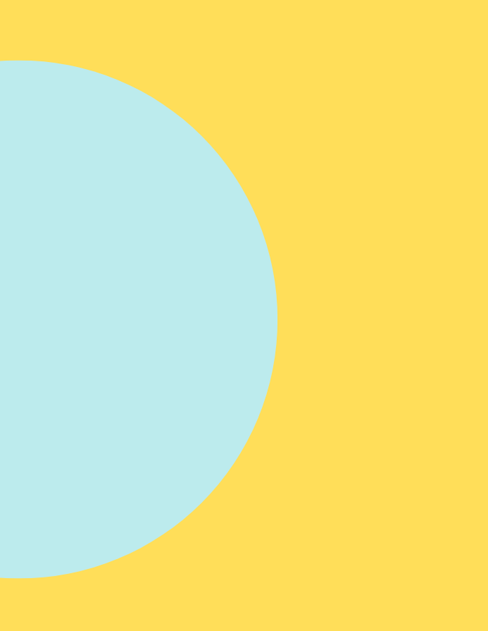

Social Media & Selbstbild
Wie sehr beeinflusst Social Media, wie du dich selbst siehst?
Der Workshop zeigt, wie Vergleiche, perfekte Inszenierungen und filtergeprägte Realitäten das Selbstbild formen. Außerdem wird deutlich, welchen Druck Likes, Trends und digitale Ideale erzeugen – und welche Strategien ein stabiles und authentisches Selbstbild unterstützen.